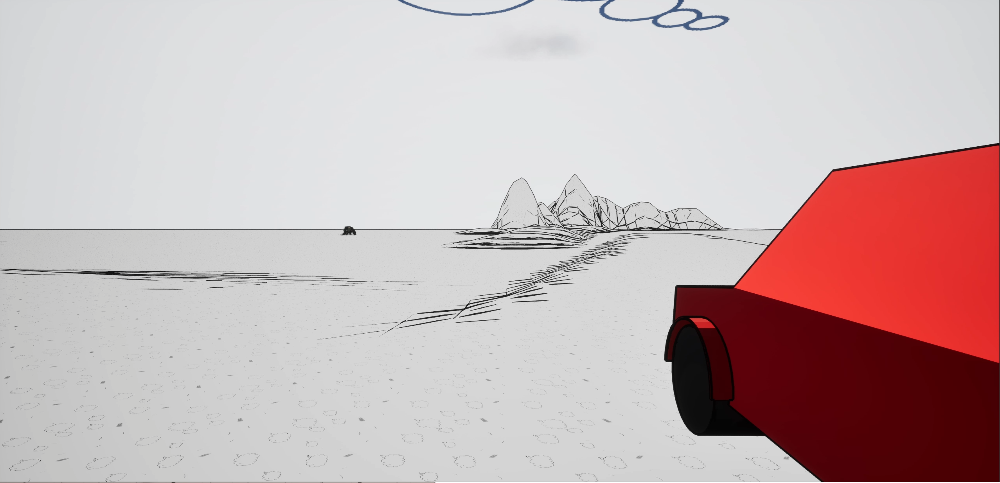
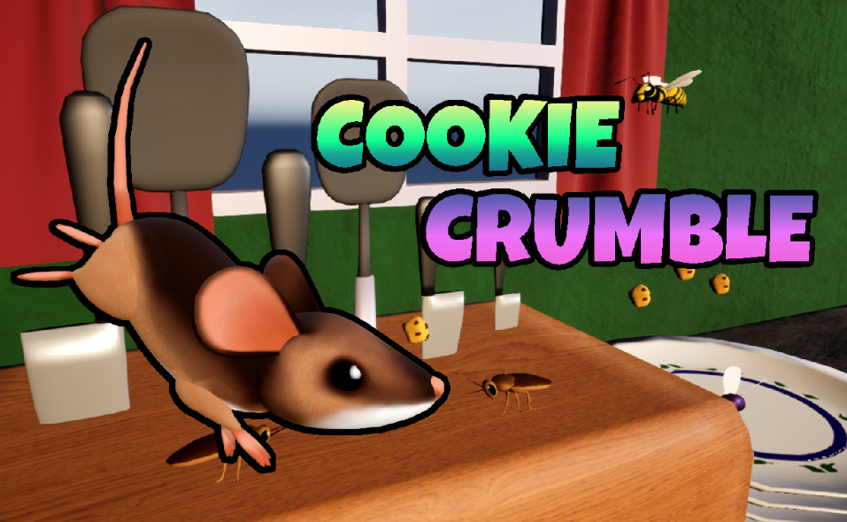
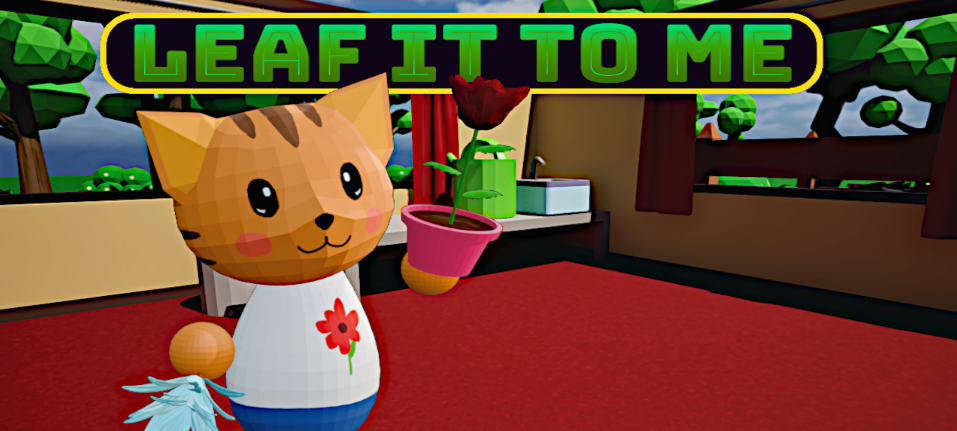
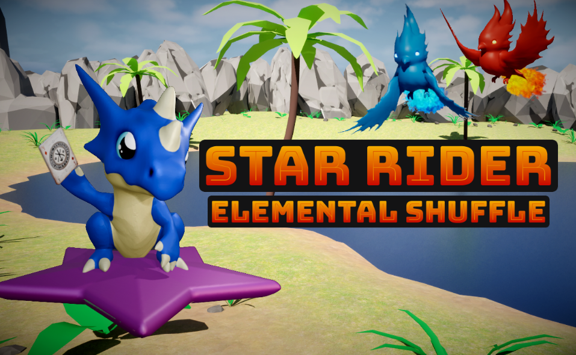
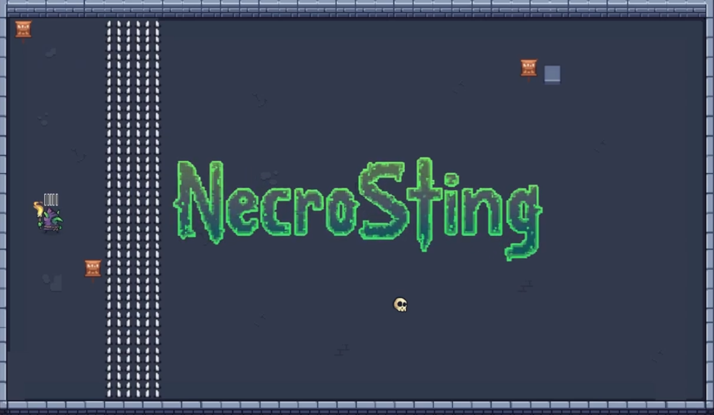

Meine Website
CSS, HTML, JavaScript, Figma
Meine erste eigene Website zur Präsentation meines Portfolios.
CSS, HTML, JavaScript, Figma
Meine erste eigene Website zur Präsentation meines Portfolios.

Jump&Run | 2.5D Sidescroller | Unreal Engine 5
Mein erster Online-Multiplayer Prototyp, inspiriert von "Ultimate Chicken Horse".

Prototyp | Unreal Engine 5
Mein erster Versuch die "Vehicle Template" von Unreal Engine zu nutzen. Außerdem erster World Building-Versuch mit outline-shader.

Jump&Run | 2.5D Sidescroller | Game Jam | Unreal Engine 5
"Cookie Crumble" ist ein 2.5D Sidescroller, entwickelt für die "Brackeys Game Jam 2025.2". Team Größe: 2

Prototyp | Unreal Engine 5
Ein komplexes System mit dem Ziel möglichst einfach erweiterbar und in neuen Projekten zu implementieren ist.

Management | 3D | Game Jam | Unreal Engine 5
"Leaf It To Me" wurde für die Shovel Jam 2025 entwickelt. Der Spieler muss die Pflanzen der Nachbarn pflegen. Team Größe: 4

Prototyp | Unreal Engine 5
Ein Prototyp in dem ich mich primär mit dem Wasser-Plugin von Unreal Engine vertraut gemacht habe.

Battle Simulator | 3D | Game Jam | Unreal Engine 5
Star Rider - Elemental Shuffle wurde für die Mini Jame Gam#42 entwickelt. Der Spieler kämpft sich mit Hilfe seiner Untertanen durch mehrere Boss-Phasen. Team Größe: 4

Prototyp | Unreal Engine 5
"Praise Hinode" spielt in einem post-apokalyptischen, dystopischen Setting. Der Protagonist erhält die Aufgabe einen neuen Posten von Hinode zu besetzen, um Kontakt mit der Außenwelt aufzunehmen.

Puzzle | 2D | Game Jam | Unity
Meine erste Game Jam. Der Spieler spielt einen Nekromant der mit Hilfe seiner Minions Rätsel lösen muss. Solo Projekt.